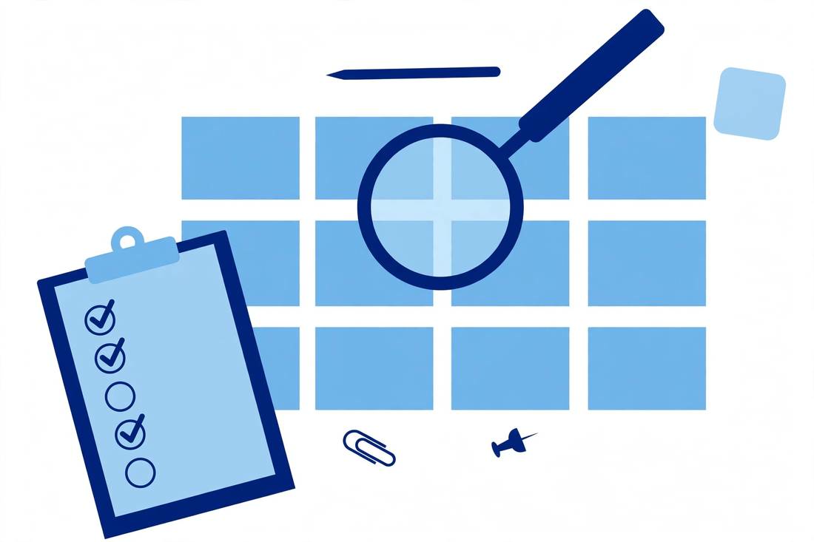
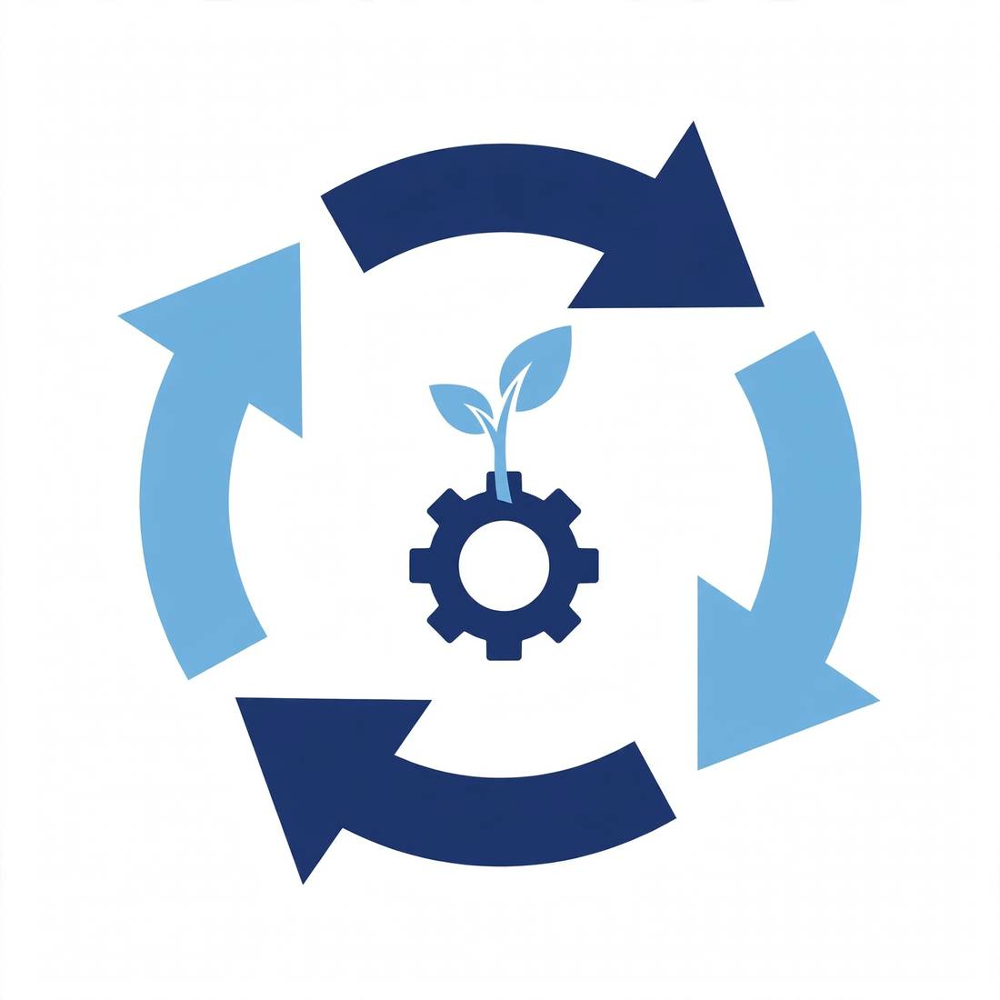

定型業務の棚卸しと改善の進め方 ― 運用改善を業務として回す
2026.11.19
運用の現場には、毎日、毎週、毎月と繰り返される定型業務がたくさんあります。 定期的な確認作業、報告書の作成、データの集計、利用者への連絡。 どれも一つひとつは小さな仕事ですが、積み重なるとチームの時間の大きな部分を占めています。
こうした定型業務は、始めたときのやり方のまま、見直されないことがよくあります。 「ずっとこうやってきたから」という理由で続いている作業の中には、 今となっては不要なものや、もっと楽にできるものが混ざっていることがあります。 この記事では、定型業務を棚卸しし、改善を「空いた時間の仕事」ではなく 業務として回していく進め方を整理します。

棚卸しから始める ― 業務を見える化する
改善の第一歩は、定型業務を棚卸しすることです。 棚卸しとは、今チームでやっている定型業務を一度すべて洗い出し、 一覧にすることです。何を、どれくらいの頻度で、誰が、どれくらいの時間をかけてやっているのか。 これを書き出してみると、意外な発見があります。
まず気づくのは、業務の全体量です。 頭の中では「いくつかある」程度に思っていた作業が、書き出すと数十件になることもあります。 一つひとつは小さく見えても、合計すると相当な時間を使っていることが分かります。 全体量が見えると、「何に時間を使っているのか」が初めて議論できるようになります。
次に気づくのは、担当の偏りです。 特定の人にだけ作業が集中していたり、誰がやっているのか曖昧なままの作業があったりします。 こうした偏りや曖昧さは、そのまま属人化や引き継ぎの難しさにつながります。 棚卸しは、業務の量だけでなく、チームの負担の見え方も変えてくれます。
棚卸しをするときのポイントは、完璧を目指さないことです。 細かい作業まで全部拾おうとすると、棚卸し自体が重い仕事になってしまいます。 まずは「毎週やっていること」「毎月やっていること」といった大きな単位で洗い出し、 頻度とおおよその所要時間、担当者を添えるだけでも十分です。 棚卸しの目的は一覧を作ることではなく、見直すための材料をそろえることです。
また、棚卸しは一人でやるよりも、チームで話しながら進める方がうまくいきます。 自分では「当たり前の作業」として意識していないことも、 他の人から見ると「それ、なぜやっているのですか」と問われることがあります。 そうした問いかけこそが、見直しのきっかけになります。
優先順位をつける ― 改善するものと残すものを見分ける
棚卸しができたら、次は優先順位をつけます。 すべての業務を一度に改善することはできません。 どこから手をつけるかを決めるために、いくつかの観点で業務を眺めてみます。
一つ目の観点は、かかる時間の大きさです。 頻度が高く、時間がかかる業務ほど、改善したときの効果は大きくなります。 毎日数十分かかる作業が少しでも楽になれば、積み重ねた効果は小さくありません。 逆に、年に一度だけの作業に時間をかけて改善しても、効果は限られます。
二つ目の観点は、その業務の目的です。 「なぜこの作業をやっているのか」がはっきりしない業務は、見直しの候補です。 始めた頃には意味があった作業でも、仕組みが変わったり、利用する人がいなくなったりして、 今では目的が薄れていることがあります。 目的が分からない業務は、やめるか、形を変えるかを検討する価値があります。 ただし、やめる判断は一人で決めず、関係する人に確認することが大切です。 「誰も使っていないと思っていた資料が、実は別のチームの仕事に使われていた」 ということもあるからです。
三つ目の観点は、ミスが起きやすいかどうかです。 手作業が多く、確認の負担が大きい業務は、改善の効果が分かりやすいものです。 作業を減らすだけでなく、ミスを減らすことも改善の大事な目的です。
優先順位をつけるときに避けたいのは、「改善しやすさ」だけで選んでしまうことです。 手をつけやすいものから片づけるのは悪くありませんが、 効果の大きいものが後回しになり続けることもあります。 時間の大きさ、目的の明確さ、ミスの起きやすさの三つを並べて見ることで、 「まずここから」という判断がしやすくなります。
改善は小さく回す ― 一度に大きく変えない
改善する業務が決まったら、進め方にも工夫が必要です。 よくある失敗は、一度に大きく変えようとすることです。 手順を全面的に作り直したり、仕組みを大きく入れ替えたりすると、 現場の負担が増え、結局もとのやり方に戻ってしまうことがあります。
改善は、小さく始めるのが基本です。 たとえば、確認作業の回数を減らす、チェックの順番を入れ替える、記録の様式をそろえる。 こうした小さな変更でも、繰り返される業務であれば効果は積み重なります。 小さな改善は、現場の負担も小さく、うまくいかなければ戻すこともできます。
小さく始めることのもう一つの利点は、効果を確かめながら進められることです。 変えたあとに「作業時間はどうなったか」「ミスは減ったか」を確認し、 よければ次の一手を考える。うまくいかなければ、やり方を調整する。 こうした小さなサイクルを回すことで、改善は現場に合った形へ育っていきます。
改善を進めるときは、変えた内容とその理由を記録しておくことも大切です。 「なぜこのやり方に変えたのか」が残っていないと、担当者が変わったときに、 理由の分からないまま元のやり方に戻ってしまうことがあります。 改善の記録は、手順書の一部として残しておくとよいでしょう。

改善を業務として回す ― 定期的に見直す仕組み
定型業務の改善でいちばん難しいのは、続けることです。 一度棚卸しをして改善しても、そのままにしておけば、やがてまた見直されない業務が増えていきます。 改善を一回きりの取り組みで終わらせないためには、見直しを業務として組み込むことが必要です。
具体的には、定期的な振り返りの場を持つことです。 たとえば、月に一度や四半期に一度、チームで定型業務を振り返る時間を作ります。 「最近、手間が増えた作業はないか」「やめたはずの作業が復活していないか」 「新しく始まった作業はないか」といった問いを、定例の中で確認していきます。 特別な会議を開く必要はありません。既にある定例の議題の一つとして組み込むだけでも十分です。
振り返りの場では、新しい業務が増えたときの扱いも決めておくとよいでしょう。 業務が増えるときに「いつまでやるのか」「誰がやるのか」を決めずに始めると、 そのまま定型業務として残り続けます。 始めるタイミングで見直しの時期を決めておくことで、業務の増え方を抑えることができます。
また、改善の成果をチームで共有することも、続けるための力になります。 「この作業は以前の半分の時間になった」「確認の手間が減った」といった変化を 言葉にして共有することで、改善はチームの当たり前の活動になっていきます。 改善を「誰か一人の頑張り」にせず、チームの仕事として位置づけることが、 長く回すためのポイントです。
まとめ
定型業務の改善は、特別な技術や大きな仕組みの導入から始まるものではありません。 まず棚卸しをして、やっていることを見える化する。 次に時間の大きさ、目的の明確さ、ミスの起きやすさから優先順位をつける。 そして小さく変えて、効果を確かめながら回していく。 最後に、定期的な振り返りの場を持ち、改善を業務として組み込むこと。
定型業務は、放っておくと増える一方です。 けれども、定期的に棚卸しをして見直す習慣があれば、 チームの時間は少しずつ、本当に必要な仕事へ向けられていきます。 改善を「空いた時間の仕事」ではなく「業務の一部」として扱うことが、 運用改善を続けるいちばんの近道です。
このブログでは今後も、運用設計や監視の仕事について、 現場の視点から書き続けていきます。
← Blog一覧へ戻る